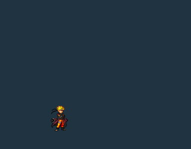

<!doctype html><html lang="zh-CN"><meta charset="utf-8"><meta name="viewport" content="width=device-width,initial-scale=1"><title>仙人鸣人 · 素材预览</title><style>*{box-sizing:border-box}body{margin:0;background:#122331;color:#e5ecef;font:15px/1.7 system-ui,sans-serif}main{max-width:600px;padding:24px 18px;margin:auto}h1{font-size:23px;margin:0 0 8px}p{color:#b6c7d0}img{display:block;width:100%;max-width:384px;margin:20px auto;background:#203340;image-rendering:pixelated;border-radius:6px}a{display:block;margin:12px 0;padding:12px;border:1px solid #7fa5b0;border-radius:6px;color:#e6fafb;text-decoration:none}small{color:#a1b8c2}</style><main><h1>仙人鸣人 · 素材预览</h1><p>下面是当前游戏导出的奥义片段，已重新采样和裁切，并添加深色底方便观看。原始 SWF 文件未改动，可单独下载。</p><a href="https://raw.githubusercontent.com/5DPLAY-Game-Studio/BleachVsNaruto_TagAssets/53dd55b6c98c0877f054b1b36cff3313602880eb/shared/assets/assets/packs/fighters/naruto_hermit/naruto_hermit.swf">下载原始 SWF · 6.8 MB</a><a href="ultimate-preview.gif" download>下载片段预览 GIF</a><small>来源：5DPLAY / BleachVsNaruto_TagAssets。原文件含其他动作和形态；此招的正式名称尚未核实。</small></main></html>